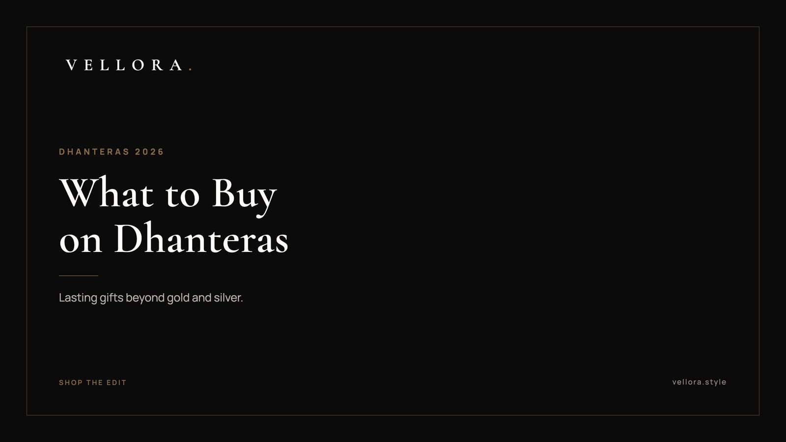

THE FESTIVE EDIT
What to Buy on Dhanteras 2026: Gift Ideas Beyond Gold and Silver
By Vansh Shah, Founder

- Dhanteras falls on Friday 6 November 2026, two days before Diwali.
- Gold, silver and metal utensils are the traditional purchases. Many families now add one lasting personal piece.
- A well-made watch fits the spirit of the day: it is metal, it is new, and it is used daily.
- Leather bags and clean sneakers make good gifts for the people who keep the house running.
- Follow your family's custom first. Everything here is meant to sit beside it.
Knowing what to buy on Dhanteras used to be simple. Gold, silver, perhaps a new brass or steel vessel for the kitchen. Those still matter, and in most homes they come first. But more families now ask what to buy on Dhanteras for the people in the house, not only for the house itself. Our answer is something new, well made and used every day.
This edit is our version of what to buy on Dhanteras in 2026. Ten pieces beyond gold and silver: watches, leather bags and a few accessories, all from what we carry at Vellora. None of it replaces the traditional purchase. It sits beside it. If you are still deciding what to buy on Dhanteras for a parent, a partner or a young adult starting work, each idea below says who it suits and why.
A short note on the tradition
Dhanteras, also called Dhanatrayodashi, is the first day of the five days of Diwali. It falls on the thirteenth day of the waning moon in the month of Kartik. Many families honor Goddess Lakshmi and Lord Dhanvantari, who is associated with health and Ayurveda. Homes are cleaned, and a lamp is often lit at the entrance in the evening.
Buying something new on the day is a long custom, most often in gold, silver or another metal. Practices differ between regions and families, so treat your own elders and your local panchang as the guide. This list is about the gift, not the ritual.
Why look beyond gold and silver
Gold and silver will always have their place on this day. We are not suggesting otherwise. But a gift can also be something a person wears or carries every morning, and remembers you by. A watch is still metal, and still new. A leather bag goes everywhere. These are the dhanteras gift ideas that get used rather than stored.
Ten lasting ideas for Dhanteras 2026
1. A yellow gold dress watch
If your family's custom calls for gold, it can be on the wrist. The Day-Date 40, Reference 228238, is a 40 mm Oyster watch in yellow gold. It suits a parent or an elder marking a significant year. A gold watch is formal, so it fits pujas, weddings and anniversaries better than the office.
2. A steel GMT watch for the traveler
A GMT watch shows a second time zone, usually with an extra hand that circles the dial once every 24 hours. It is useful for anyone with family abroad or a lot of travel. The GMT-Master II, Reference 126710GRNR, is a 40 mm Oyster case in Oystersteel. Steel suits daily wear and quietly fits the old custom of buying something in metal on the day.

3. A solar chronograph
Solar watches charge from light, so there is no routine battery change. The Seiko Prospex Speedtimer Go Large Solar is a good choice for someone who wants a sporty, legible watch that keeps going on its own.

4. A first proper watch for a new earner
A son or daughter in their first job is a natural Dhanteras gift. The Seiko Prospex Circuit Race Solar is easy to live with, and it marks the year they started earning. That is a fitting thought for a festival tied to prosperity.
5. A structured leather handbag
A structured bag holds its shape and dresses up quickly. The Louis Vuitton Vendome PM suits a wife or mother who likes a polished look for evenings and family visits.

6. An everyday carryall
Some gifts are about the daily routine. The Louis Vuitton CarryAll PM is a practical, roomy bag for someone who carries a lot and moves between work and home all day.
7. A navy flap bag for evenings
Navy is a quiet alternative to black. The Dior Monogram Flap Bag in navy works with festive silks and with plain office wear, so it goes from Diwali dinners straight back into the week.
8. A soft hobo for a mother
The Gucci Monogram Hobo Bag in beige is slouchy and easy to carry on the shoulder. It suits a mother who wants comfort first and still likes a little detail.
9. A clean leather sneaker
For a husband, brother or son, the LV Trainer Sneaker in blue is a smart, wearable gift. It works with jeans on a weekend and with a kurta on a relaxed festive evening.
10. A paired gift for a couple
For parents, newlyweds or a sibling and their partner, two pieces chosen together often mean more than one large gift. A watch for one and a bag for the other is the simplest version. The next section shows a few pairings.
Building your own luxury gift set
People often look for luxury gift sets in India around Diwali. We would suggest building one yourself. Choose two pieces that suit the person, or the couple, and present them together. It feels more personal than anything pre-packed.
| Gift set | Pieces to pair | Who it suits |
|---|---|---|
| A luxury watch gift set for a parent | Gold dress watch with a note from the family | An elder marking a milestone |
| Diwali gifts for couples | Steel GMT watch and a structured leather bag | Parents or newlyweds |
| The new earner | Solar watch and a clean leather sneaker | A son or daughter in a first job |
| The everyday set | Carryall tote and a solar chronograph | A busy partner who works and travels |
A luxury watch gift set does not need a special box. It needs the right watch, chosen with care. If you want to compare movements and case sizes first, our page on the best luxury watches for men is a calm place to start. For bags, our leather handbags buying guide covers shapes and leathers.
You can browse every watch in the Vellora watch edit before you decide.
What to look for in a piece that lasts
Whatever you decide, the test is the same: whether it will still be in use in five years. A few things help you judge.
In a watch
- Movement. An automatic winds itself from the motion of the wrist. Quartz runs on a battery and keeps very accurate time. Solar quartz charges from light.
- Case size. Most dress watches sit between 36 mm and 40 mm. Larger sports watches suit a broader wrist.
- Bracelet or strap. Steel and gold bracelets suit daily wear. Leather straps feel dressier but need replacing over time.
In a leather bag
- Shape. A structured bag holds its form. A soft one is lighter and easier to carry all day.
- Hardware. Clasps, zips and chain straps should feel solid and move smoothly.
- Lining and stitching. Look inside. Even, tight stitching usually means careful work throughout.
If you are still unsure what to buy on Dhanteras for someone specific, start with the category they use most. A person who checks the time often wants a watch. A person who carries their day with them wants a bag.
Choosing well, without rushing
The day itself is busy. Choose in October if you can, so the gift is wrapped and ready well before the evening puja. Pick by the person first, then check the piece fits how they live. We, the Vellora team, would rather you buy one thing that is worn every day than several that wait in a drawer.